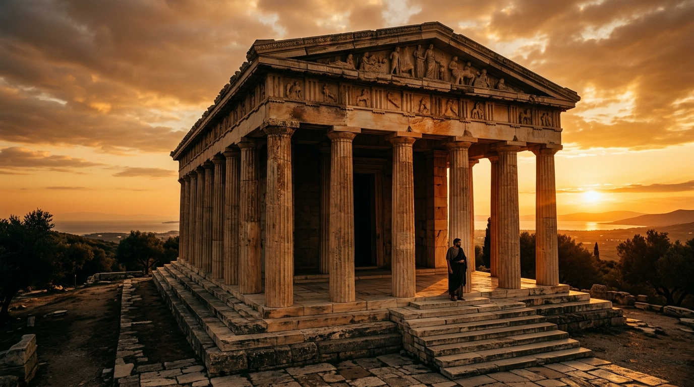
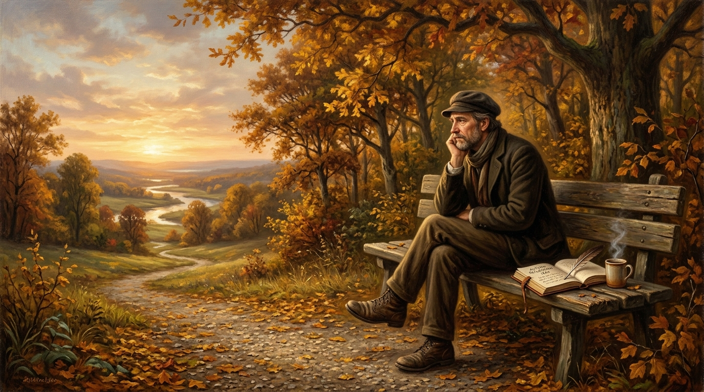
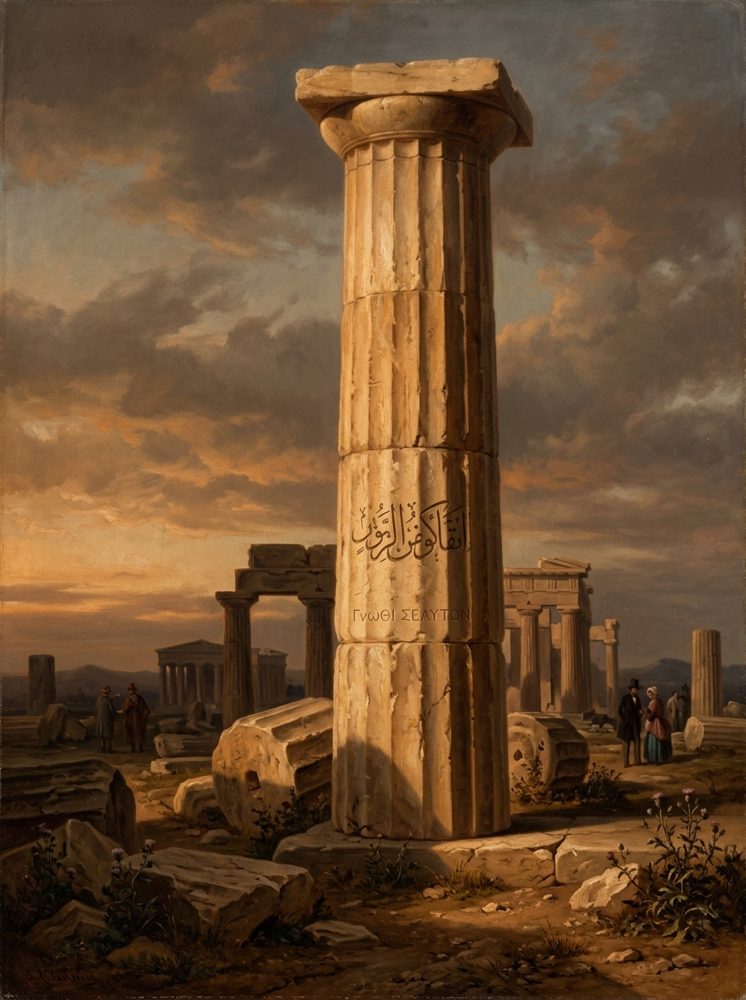

التأملات — (Meditations)
ماركوس أوريليوس
يوميات الإمبراطور الفيلسوف حول حراسة العقل، الصمود أمام المحن، والعيش وفق الطبيعة.
استكشف العمل ←
اكتشف المدارس الفلسفية الكبرى، أهم المفكرين، والأعمال التي شكلت تاريخ الفكر الإنساني مع حكمة ونور.
ليست الفلسفة مجرد نظريات قديمة، بل طريقة حية في النظر إلى الحياة والأسئلة التي نعيشها كل يوم:
الفلسفة لا تقدم دائماً إجابات جاهزة، لكنها تعلمنا كيف نسأل، وكيف نفكر، وكيف نراجع أفكارنا بثبات وهدوء.
اختر مساراً فكرياً موجهاً واكتشف أطروحات الفلاسفة خطوة بخطوة

كيف نعيش حياة طيّبة؟ وما هي السعادة الحقيقية؟ رحلة في الأخلاق والعزلة.
اكتشف الأسئلة الأولى وتجنب أخطاء التفكير مع دروس من سقراط وأفلاطون.
رحلة في الحرية والمسؤولية ومواجهة العبث وصناعة الذات مع سارتر وكامو.

دراسة العقد الاجتماعي، العدالة، فلسفة العمران والروابط البشرية.

تشريح أزمات العصر والعدمية والصلابة النفسية عند شوبنهاور ونيتشه.
مدارس وأفكار غيّرت طريقة الإنسان في فهم نفسه والعالم عبر العصور
دراسات وتحليلات تحريرية معمقة في أمهات القضايا الفلسفية
تعرّف على أعلام الفكر الذين أعادوا صياغة الأسئلة الكبرى للإنسانية
أعمال وكتب ساهمت في تشكيل تاريخ الفكر الفلسفي
ماركوس أوريليوس
يوميات الإمبراطور الفيلسوف حول حراسة العقل، الصمود أمام المحن، والعيش وفق الطبيعة.
استكشف العمل ←
أفلاطون
حوار فلسفي خالد حول العدالة، رمزيّة الكهف، وتأسيس الدولة الفاضلة ومفهوم الخير.
استكشف العمل ←
ألبير كامو
تحليل فلسفة العبث، والتمرد الإنساني وصناعة السعادة بالرغم من عدمية العالم.
استكشف العمل ←« لا يكفي أن نعرف، بل يجب أن نتساءل ونمارس الحكمة في حياتنا اليومية. »